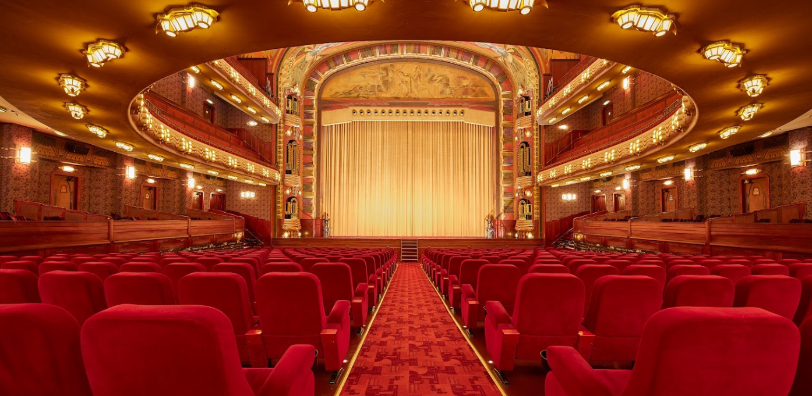
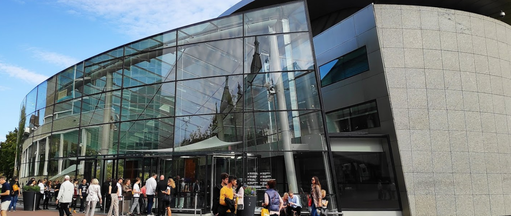

Fun ideas
You can add them on your bucketlist
Experience the cinema
Film reviews and programmes can be found in Amsterdam magazines, cinema foyers and on www.filmladder.nl. It is worth mentioning that movies are displayed in their original language, with Dutch subtitles most of the time. 18+ movies are never dubbed in the Netherlands.
Read moreBeautiful theaters

music, drama and comedy and there are markets and exhibitions you can enjoy for free. The International Documentary Film Festival Amsterdam (IDFA) The International Documentary Film Festival Amsterdam is a globally acclaimed festival that showcases documentaries and their makers from all over the world.
Read moreGo to the museum
Amsterdam is the home to over seventy museums. Most people know about the famous Rijksmuseum, the Van Gogh museum, or the Anne Frank house, but there are many more interesting museums that are worth a trip.
Read more